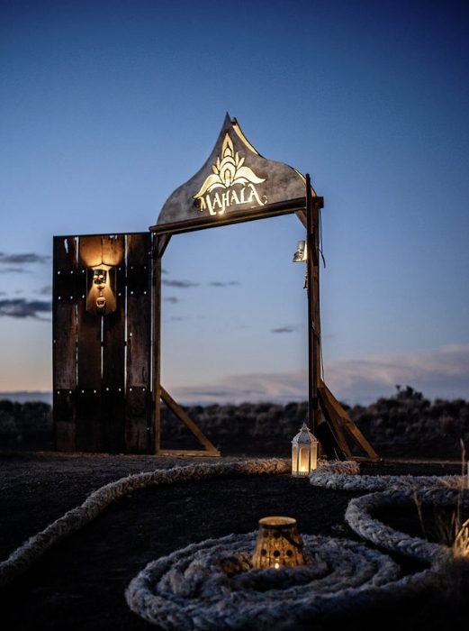
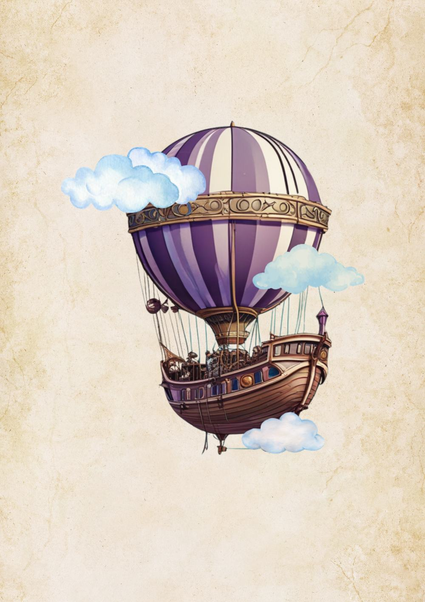
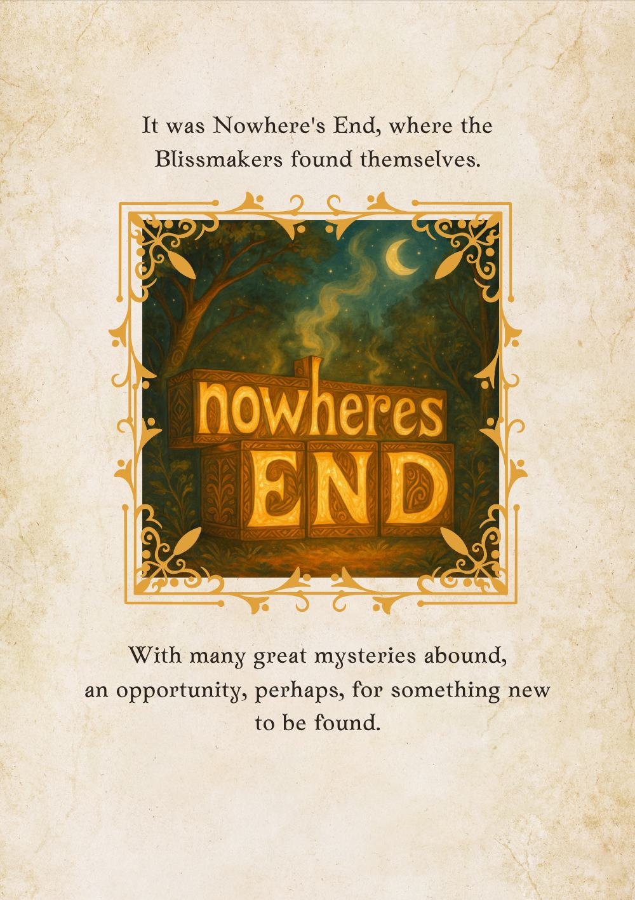
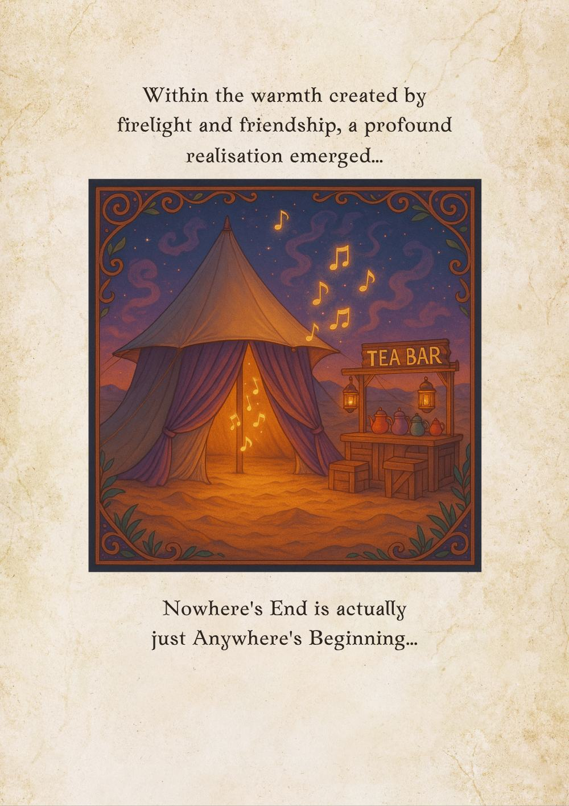
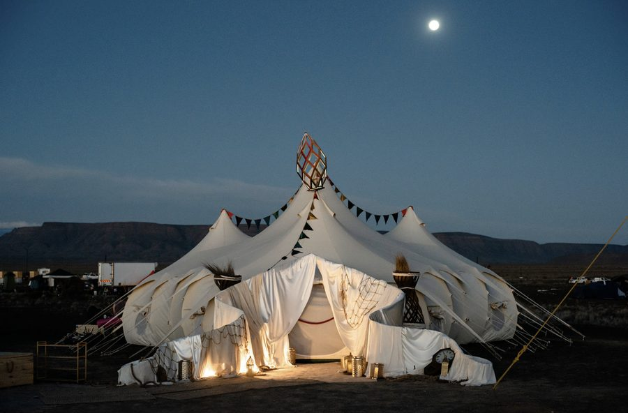
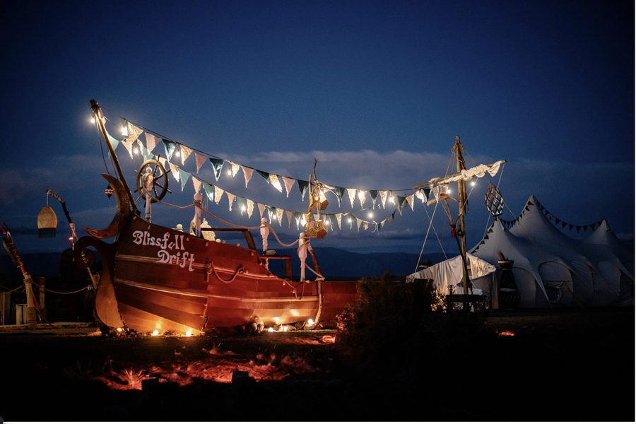

The MAHALA portal
A timber gate with the lotus on its crown, and a spiral of rope on the ground to walk in along.
A theme camp at AfrikaBurn, from Cape Town
A community camp and creative collective, built on gift culture, intentional community and reverential play.
For over ten years we have built camps at AfrikaBurn, on the playa of the Tankwa Karoo.
What Mahala is
Mahala means free, in isiZulu slang. In Arabic and Indian traditions, a mahal is a palace: a gathering place.
We are a community camp and a creative collective from Cape Town. What we make at AfrikaBurn is our gift to Tankwa Town: workshops, sound journeys, movement and music, from the first light to late at night.
We are completely non-profit, and we are not plug and play. Camp mates dream the camp together, build it together, take it down together, and stay from the first day to the last.
Since 2024 we have raised tented temples on the playa and filled them with sound and story. In 2027 we begin to build a temple in timber, starting with The Seed.
The story
The camp's own book tells it like this. The Ambassadors of Bliss crossed the cosmos in their magic airship, until a Storm of Uncertainty brought them down in a strange and liminal place called Nowhere's End.
They salvaged what they could, and made themselves at home with tea and songs. Searching the wreckage for a sign, they found a portal, and with it the great remembering: that unconditional love remains ever present.
Nowhere's End is actually just Anywhere's Beginning.
Mahala grew out of State of Bliss, its sister camp, whose lit wooden boat, Blissfull Drift, still sails with us.



Paintings from the Book of Mahala.
The spaces
The camp is laid out anew each year. These are the places at its heart.

A timber gate with the lotus on its crown, and a spiral of rope on the ground to walk in along.

Three bell tents joined like a lotus around a taller centre. The sound journeys play here, two a day, and a big hand-wound coil hangs on its centre pole.

The camp's wooden boat. In its open hull, seats step down to a fire pit shaped like a king protea, and around it lies the chill space, with cushions and daybeds.

Tea for every guest. Draw a card from the Mahala Archetype Deck, and the card chooses your blend.
Food for the whole camp, cooked by meal teams of camp mates.
A braai and couches, for long evenings together.
Massage, given as part of the camp's gift, under shade with screens and soft light.
A day at the camp
From the 2026 programme. The 2027 programme is being shaped now.
The heart of the week
Living together
Six agreements for how we treat each other, and a way through conflict when it comes.
The camp calls this the TUNING sequence.
As a Guardian, you hold the threshold of the Mahal as Temple Keeper, or greet guests and tend the fire as Greeter and Fire-Keeper. Add a shift at the Tea Bar, a few short chores and a place on a meal team.
Every camp mate belongs to a guide's flock. Your guide checks that you are ready: tent, shifts, water, insurance, food needs and the ride in.
A tent, water and warm layers, because Tankwa nights can be freezing. Travel insurance that covers air evacuation is a must. The kitchen plans for gluten-free, vegetarian and dairy-free needs.
We live by AfrikaBurn's guiding principles, and we leave the playa as we found it.
Between the burns
Each new moon on the way to the burn, we arrive in silence, sit in a guided meditation, share in circle and close with our intentions.
After the burn, the camp unpacks together in Cape Town, and the year begins again.

AfrikaBurn 2027
The first structure of a temple Mahala means to raise over three years: a timber dome clad in coloured panes, opening like a king protea. It is made flat in a Cape Town workshop and raised on the playa in five days. At night its lantern throws a star of colour across the playa.
The Mahalaverse is an evolving world you can walk in your browser. Its way runs from the Book of Mahala, through the camp, to The Seed.
Concept visualisation of a proposed temple.
Joining
Mahala grows by invitation. Camp mates each name the people they would most like beside them, and each of those people receives a personal invitation. We look for people who are all in, and who want something deeper than a place to pitch a tent.
If you have been invited, you can answer in the Mahalaverse: apply for your place at the camp, choose your meal shifts and join a crew. There, under the main tent, camp mates share their playlists and DJ sets.
Write to us
wearemahala@gmail.comAfrikaBurn 2027
Monday 26 April to Sunday 2 May, in the Tankwa Karoo. Build week comes first, and its dates are being confirmed.
For those who dare to Wander